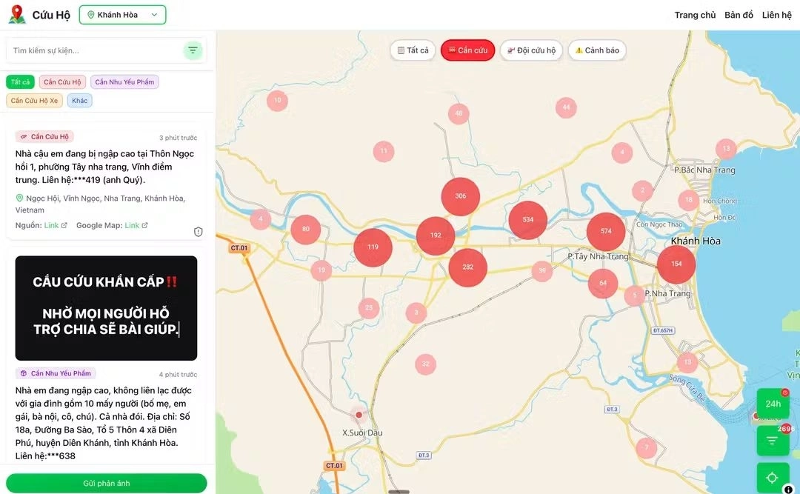

1) What is vibe coding?
A software development practice that uses artificial intelligence (AI) to generate functional code from natural language prompts. The term, coined by AI researcher Andrej Karpathy in early 2025, describes a workflow where the primary role shifts from writing code line-by-line to guiding an AI assistant to generate, refine, and debug an application through a more conversational process.
Common platforms
- “Pure” vibe coding: Replit, lovable, v0, Base44
- AI-assisted development: Cursor, GitHub Copilot
Speed to major revenue milestone
Source: Saastr
2) Adoption by sector
Source: Secondtalent
3) Startup landscape: category counts
This chart shows the number of startups in each category registered on vibecodedstartups.com
Example product: ThongTincuuho.org

A community-driven, real-time rescue information platform created for floods and natural disasters. It aggregates rescue requests and reports and visualizes them on a live interactive map. It gained traction quickly within the first 24 hours, with strong community sharing and reach.
4) Why people use vibe coding
This chart breaks down the motivations people mention (percent distribution).
5) What the experience feels like
This chart summarizes how users describe the vibe-coding process (percent distribution).
6) Code quality, in practice
People often describe AI-generated code as fast to produce, but uneven in reliability and maintainability.
7) Quality assurance habits
This chart shows how people validate AI-written code (testing, edits, relying on AI, or skipping QA).
8) Current risks and challenges
Primary issues identified by development organizations:
Source: Secondtalent